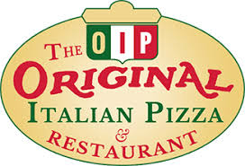

Pizza
 Pizza (Italian: ['pittsa'],neapolitan:[pittsa]) is a savory dish of Italian origin cosisiting of a usally ruond, flattend base of leavend wheat-based dough toped with tomatos, cheese, and aoften various other other ingrdent (suck us anchoviesn mashroom onions olives, pineapple etc), wich is somthing is then baked at a high temperature, traditionally in a wood-fired oven.[1] A small Pizza is somtimes called a pizzetta. A person makes Pizza is known as a pizzaiolo.
Pizza (Italian: ['pittsa'],neapolitan:[pittsa]) is a savory dish of Italian origin cosisiting of a usally ruond, flattend base of leavend wheat-based dough toped with tomatos, cheese, and aoften various other other ingrdent (suck us anchoviesn mashroom onions olives, pineapple etc), wich is somthing is then baked at a high temperature, traditionally in a wood-fired oven.[1] A small Pizza is somtimes called a pizzetta. A person makes Pizza is known as a pizzaiolo.
pizza

Pizza (Italian: ['pittsa'],neapolitan:[pittsa]) is a savory dish of Italian origin cosisiting of a usally ruond, flattend base of leavend wheat-based dough toped with tomatos, cheese, and aoften various other other ingrdent (suck us anchoviesn mashroom onions olives, pineapple etc), wich is somthing is then baked at a high temperature, traditionally in a wood-fired oven.[1] A small Pizza is somtimes called a pizzetta. A person makes Pizza is known as a pizzaiolo.